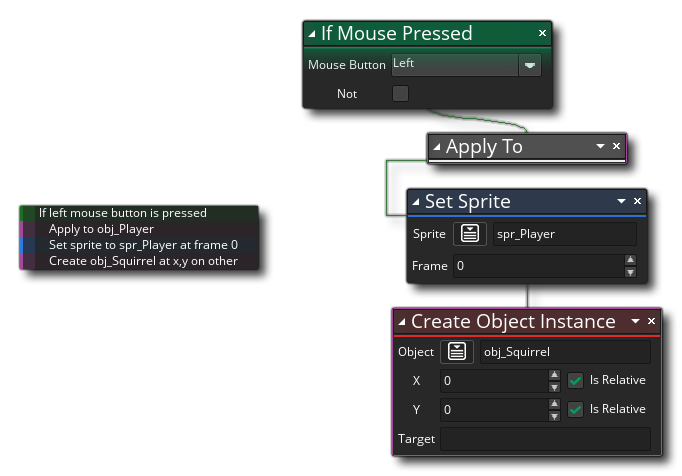
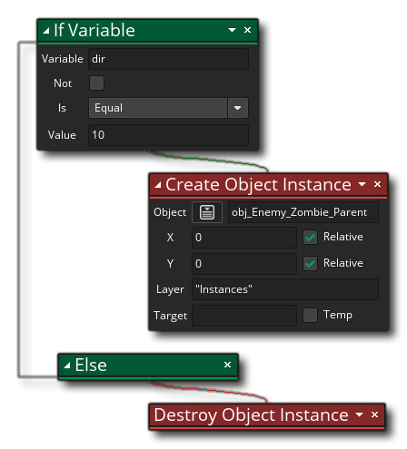
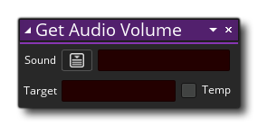
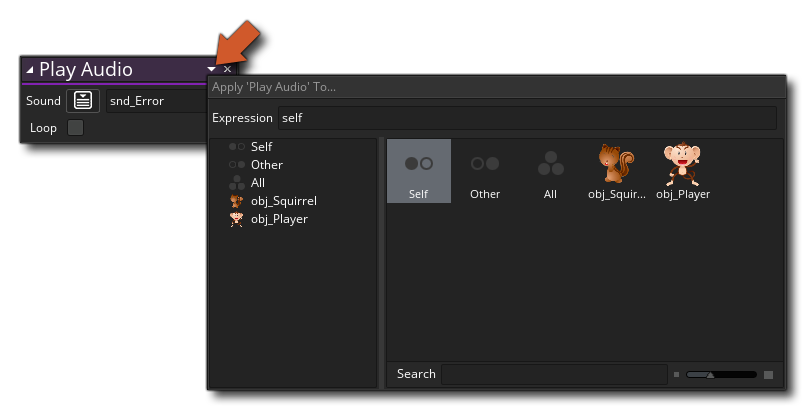
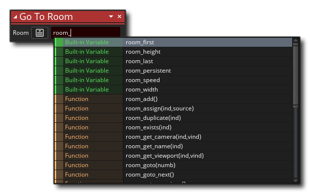
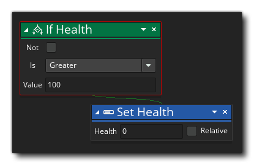

要向物体添加行为，可以使用 动作工具箱 中可用的不同库中的动作构建代码。 首先，你需要创建一个新的 拖拽项目，然后创建一个 新物体（如果需要，你也可以为该物体分配一个 精灵）。在新物体中，你可以开始添加 事件，并在事件中添加你的 DnD™ 代码动作。 
请注意，当你添加新事件时，会打开一个 “代码” 窗口，其中包含给定事件的选项卡（请参见上图），现在你可以将所需的任何动作从右侧的 “工具箱” 拖动到 “动作块” 窗格中代码窗口。现在，虽然你可以添加 任何 动作，但这并不意味着它们将全部工作，或者随项目一起全部被编译。 某些动作需要 变量 才能工作，而其他动作（如 绘制 动作）只有在特定事件中使用时才会起作用。你怎么知道使用哪些？好吧，一般来说，这只是一个使用逻辑的问题......如果一个动作需要一个变量而我们还没有定义一个变量，那么在我们添加动作来创建变量之前我们不应该使用它。
将动作从 “工具箱” 拖动到主 “动作块” 工作区时，它将展开以显示可填写的可用参数并更改以设置行为。在下图中，我们将工具箱 常规 中的 变量赋值 动作拖到了动作块工作区中： 
你可以看到新动作也以缩写形式显示在代码窗口的左侧。 可以单击此动作列表（称为动作 概述）以快速导航到该动作以进行编辑。 如果需要，你可以继续向事件添加动作，每个新动作都被 “链接” 到前一个动作，以显示你正在构建的 DnD™ 代码的流程。请注意，在初始动作下面会突出显示你可以拖拽进一步动作的区域，并且，根据你使用的动作，将突出显示不同区域以显示链中可添加的位置： 
当你向工作区添加动作时，它们将 “链接” 到上面的动作，以便你可以看到 DnD™ 代码如何一个动作流向另一个，并且概览窗格以缩写形式和执行顺序显示它们： 
有些动作会将代码放在远离主流的单独链中 - 如果 在继续使用主链之前，如果满足正确的条件，则会创建应该发生的子动作链： 
请注意，当使用可能具有此类侧链块的动作时，动作将突出显示 两个 区域以拖拽进一步动作：一个位于正常动作下方，另一个位于动作右侧以显示你要创建的当第一个动作的条件返回 true 时，要运行的单独动作块： 
你只需单击  并将其拖动到所需的新位置即可更改链中动作的位置，如果单击并按住一秒钟然后移动鼠标，则可以在工作区中移动动作，同时保持其在动作块链中的位置。
并将其拖动到所需的新位置即可更改链中动作的位置，如果单击并按住一秒钟然后移动鼠标，则可以在工作区中移动动作，同时保持其在动作块链中的位置。
这是使用拖拽代码编辑器的基础知识，但在下面的部分中解释了更多重要的细节：
重要的是要注意许多动作提供 “目标列表” 变量，可以将其标记为 “临时”，例如： 
这意味着你可以提供一个 “目标” 变量，该变量将保存动作的返回值。在上面的示例动作中，动作将返回你选择的音频资源的音量，因此你提供一个目标变量来保存此值，以便稍后可以引用它。现在，需要先使用 变量赋值（Assign Variable）（这会创建一个 实例变量）或 声明临时变量（Declare Temporary Variable） （这会创建一个 局部临时变量）声明此目标变量，但如果选中 “临时（Temp）” 选项，则可以简单地添加变量名称，动作将创建该变量并将其设置为保存返回值（创建临时局部变量）。此后 使用的任何动作现在都可以访问临时变量中的值，但 只能在同一个事件或脚本中访问。临时变量仅在创建它们的作用域内可用。 有关变量和变量作用域的更多深入信息，请参见 此处。
不仅变量具有作用域（参见上面的 目标变量），动作也可以具有不同的 作用域。事实上，几乎所有的动作都可以被赋予不同的工作作用域，这需要从动作本身打开的下拉窗口设置，如下所示： 
你还可以使用特殊动作 应用到 为所有后续动作设置作用域。 有关 DnD™ 动作的此功能的更多信息，请参阅此处：
使用拖拽动作时，你必须将变量和表达式添加到动作的不同输入字段中。但是，当你执行此操作时，通常会弹出 “自动完成” 窗口以帮助你： 
此弹出窗口将列出所有内置的 GML（GameMaker 语言）变量、常量和函数，以及包含你键入的首字母的资源。 它可用于快速查找你希望动作的资源或变量，而无需自己键入所有内容。 例如，如果你的所有房间都以 “rm_” 作为前缀，那么输入并等待片刻将显示自动完成窗口，其中所有资源都以 “rm_” 开头。 请注意，自动完成窗口中显示的所有内置变量都可以在动作中需要变量或表达式的任何位置使用，大多数 GML 函数也是如此。
有时使用动作时，你会看到侧面有一个小的 加号图标
。这意味着你可以 扩展 动作以执行额外任务或进一步参数。 例如，如果查看 声明临时变量 动作，可以看到它有这个图标
单击该图标时，动作将展开并允许你声明更多变量，从而可以更轻松，更快速地同时定义多个变量。
该图标还可用于需要可选参数的动作，例如 选择（Choose） 动作，它允许你添加要返回的各种不同值：
处理 DnD™ 代码时，可以单击动作上的鼠标右键
（或左侧短列表中的文本）以打开以下菜单：
此菜单包含以下选项：
- 剪切 / 复制 / 粘贴：这将允许你剪切、复制或粘贴所选的任何动作。请注意，你可以在动作之外使用
+
并拖动，或在单个动作上使用
/
+
- 禁用：此命令将禁用所选的动作。禁用某个动作后，它仍然可以在工作区中看到，但在编译游戏时它 不会运行。通过这种方式，你可以添加 / 删除用于测试和调试的动作。下图显示了一些禁用了动作的 DnD™ 代码：
你可以看到 “If Score（如果得分）” 和 “Go To Next Room（前往下一个房间）” 动作已被禁用，因此在测试或编译游戏时将跳过它们。
- 切换断点：此命令将为所选动作打开或关闭 断点。断点只是 DnD™ 代码中调试器应该在 调试模式 下运行时停止的一个点。将突出显示分配了断点的动作，如下图所示（“If Health（如果健康值）” 动作已设置为断点）： 
- 平移：选择此选项将平移和缩放工作空间以聚焦所选动作。
- 显示帮助...：此选项将打开与当前所选 DnD™ 动作关联的页面上的手册，以便你查看其工作原理。